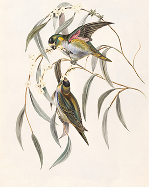
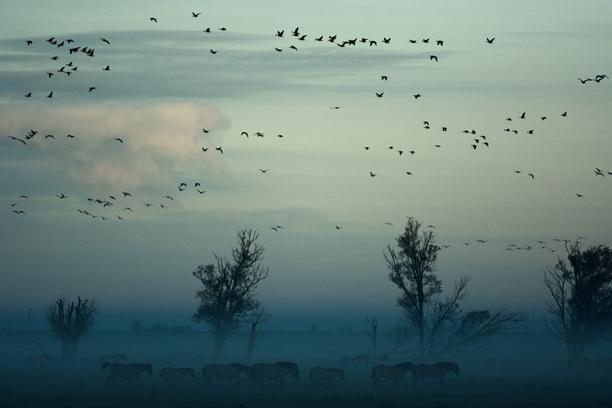

Många av de fåglar man kan se i Skandinavien under vår och sommar lämnar det nordiska kalla klimatet över vintern för att sedan komma åter till våren. Det är fåglarnas flygförmåga som ger dem denna frihet och närmast mytologiska förekomst. Fascinationen över dessa djur är stor hos flera. Många ställer sig frågan, Vart tar de vägen? och vad upplever de under färden?

